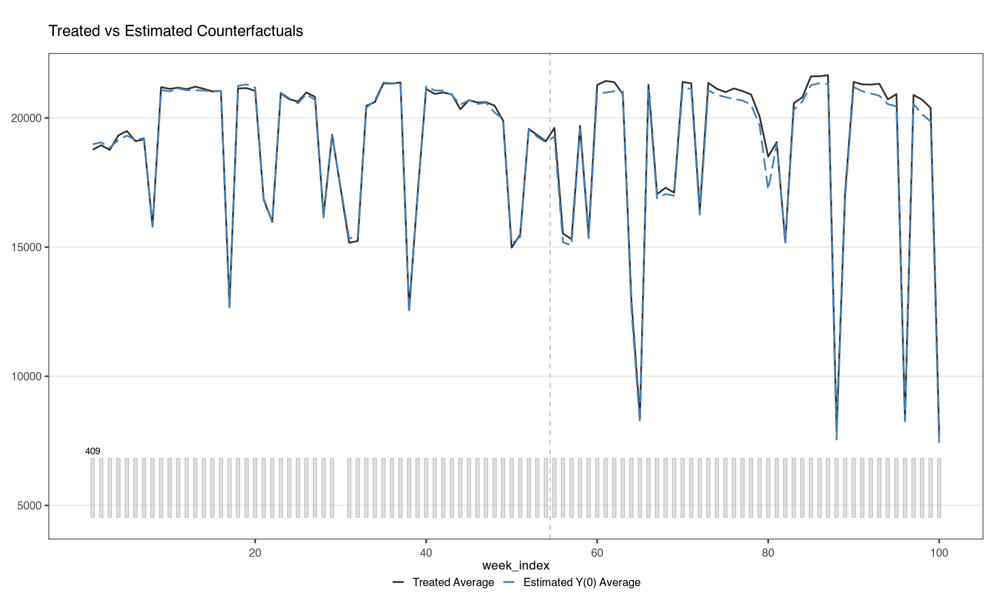

① 서울 내부 대중교통: OD 409쌍 gsynth① Within-Seoul transit: gsynth on 409 OD pairs
기후동행카드는 서울 내부 통행에만 쓸 수 있으므로, 서울 안에서 출발·도착하는 OD 409쌍을 처치 단위로, 서울 밖에서 출발하거나 서울 밖으로 가는 OD 942쌍을 비교 단위로 두고 일반화 합성통제법(GSC)으로 반사실을 추정했습니다.The pass covers travel within Seoul, so the 409 OD pairs that begin and end in Seoul are treated and 942 pairs that start or end outside Seoul are comparison units in a generalised synthetic control (GSC).
설계Design
- 결과변수: 평일(공휴일 제외) 06:00–09:59에 출발·도착한 이용자 수의 주간 합(인일). 같은 OD쌍 안에서 한 카드는 하루 오전에 한 번만 셉니다(환승·반복 통행 무관).Outcome: weekly sum of daily distinct card users departing and arriving between 06:00 and 09:59 on weekdays (holidays excluded), in person-days. A card is counted once per OD pair per weekday morning, regardless of transfers or repeated journeys.
- 처치 전 53주, 처치 후 46주(첫 주 2024-01-29). OD·주 고정효과, 공변량 log(출발지 인구), 잠재요인 4개(롤링 교차검증 GMSPE + 1-SE 규칙). 이용 규모 가중치 없음.53 pretreatment and 46 posttreatment weeks (first week 2024-01-29). OD-pair and week fixed effects, log origin population, four latent factors (rolling cross-validation, GMSPE with the 1-SE rule). No ridership-size weights.
- 효과율 = 주간 ATT ÷ 처치 OD들의 처치 전 평균 이용량 × 100. 추론: OD 단위 부트스트랩 1,000회(처치·비교 집단별로 OD 전체 시계열 재표집). 신뢰구간은 선택한 요인 수·공변량에 조건부입니다.Effect % = weekly ATT ÷ the treated pairs’ pretreatment mean use × 100. Inference: 1,000 unit-level bootstrap replications (whole OD histories resampled within treated and comparison groups). CIs are conditional on the selected factor count and covariates.
결과Results
46주 전체Full 46 weeks
+1.87%
95% CI 0.93–2.81
추가 이용Additional use
148,000
인일/주 · 46주 약 682만person-days/week · ≈ 6.82 million over 46 weeks
첫 12주 (K-Pass 이전)First 12 weeks (before K-Pass)
+1.52%
95% CI 0.83–2.21
양의 효과 ODODs with a positive effect
336 / 409
약 82%about 82%
시간에 따른 변화Over time
- 첫 주(1월 29일 시작) +1.56%, 3월 11일 시작 주에 +2.71%로 정점, 4–6월은 약 1.4–1.5%로 안정.+1.56% in the first week (from 29 January), a peak of +2.71% in the week from 11 March, and about 1.4–1.5% from April to June.
- 휴가철 8월 추정치는 0과 구별되지 않았고, 9–11월은 양의 효과가 이어졌으며 12월 초 다시 올랐다가 마지막 주에 낮아졌습니다.The August (vacation) estimate was not distinguishable from zero; effects stayed positive in September–November, rose again in early December and fell in the last observed week.
강건성Robustness
- MSPE 기준으로 고른 2요인 대안 모형도 주 결과와 일치하는 증가를 보였습니다.An alternative two-factor model selected by MSPE also showed an increase consistent with the main result.
- 처치 전 이용이 매우 적은 비교 단위 183개를 빼도 약 +1.88%.Excluding 183 comparison units with very low pretreatment use: about +1.88%.
- K-Pass(2024-05-01)는 서울과 비교 지역 모두에 적용됩니다. 비교 지역 이용을 늘렸다면 효과는 0 쪽으로 편향됩니다. 5월 이후 주별 추정치는 줄지 않았습니다.K-Pass (from 1 May 2024) applies in Seoul and in the comparison areas; if it raised comparison-area use, the estimate is biased toward zero. Weekly estimates did not decline after May.
- 동등성 검정 범위(±1.98%)가 추정 효과(1.87%)보다 넓어, 그 크기의 오차를 배제하지 못합니다.The equivalence-test margin (±1.98% of pretreatment use) is wider than the estimated effect (1.87%), so an error of that size cannot be ruled out.
출처: 논문 원고 v4 1.1–1.2절, 2.1절, 4.2절.Source: manuscript v4, sections 1.1–1.2, 2.1 and 4.2.
저장소 결과와의 차이. 저장소의
results/01_citywide_gsynth/와 아래 그림은 그 이전 추정입니다(비교 941개, 효과율 분모 = 반사실). 그 기준으로는 +1.568%(95% CI 0.823–2.313), 주 117,959건입니다. 데이터 탐색 페이지의 주별 그래프도 이 이전 추정을 그립니다.Difference from the repository results. results/01_citywide_gsynth/ and the figures below come from an earlier run (941 comparison units; effect relative to the counterfactual): +1.568% (95% CI 0.823–2.313), 117,959 per week. The weekly chart on the data-explorer page also shows this earlier run. 이전 추정 표earlier-run table

진단 그림(부록 B)은 그림 갤러리에 있습니다.Diagnostic plots (Appendix B) are in the gallery. 갤러리gallery
코드Code
code/01_citywide_gsynth/ — 입력 패널: data/transit/.input panels: data/transit/.